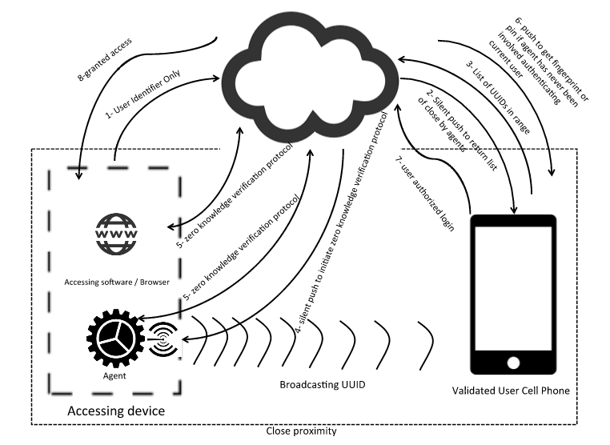

Secure Authentication Without Relying on Computationally hard-to-guess Passwords
The main authenticator in this process is a biometric or pin authorized phone. But as opposed to second factor authentication methods this method does not require user interaction on every authentication attempt.
The process requires:
- A bluetooth enabled smart phone that can be protected with biometrics or pin. The phone also needs to support silent and non-silent push. Basically any modern smart phone like iPhone, Android, or Windows phone should work
- The computer that start the authentication session needs to also support bluetooth
Below is the diagram of all the players and interactions numbered in order of occurrence:

Steps:
- At login attempt, browser will send unique identifier of the user to server. It will also start recording user's behavioral signature like mouse movements and keyboard presses
- At same time all agents are recording user's behavioral signatures in the background
- Server will send a silent push to all authorized phones of that user
- Phones will turn on low energy bluetooth to detected advertising devcies around with a specific service ID - this ID can be unique to any authentication service
- The Computer will have an app that advertises a specific UUID, that uniquely identifies the device
- Phone picks all close by ids under service ID and sends them back to server. All of this happens in background without user interference. Most modern phones support bluetooth discover in the background
- Server verifies that any UUIDs are within their Agent fleet. We call these valid agents
- Server notifies browser (through web socket) and all the valid agents (though silent push) to have their user generated signatures ready. "User generated signature" can be anything that is pseudo random and both agent and login page in browser have access to it. Examples are:
- Mouse movements after login page load - we can notify user to move their mouse randomly for more secure login
- Key presses after login page load
- At this point zero knowledge proof algorithm (Socialist Millionaire) is started between the web browser and all valid agents with server being the moderator. Data transfer between agent and server should be secured using asymmetric pub/pri key to assure authenticity of agent. Unique key is used for each Install of agent and public key is stored in server
- Alternatively we can securely send “user generated fingerprint” back to server for verification instead of using socialist millionaire algorithm
- If zero knowledge verification process or server verification resulted in a match between an agent and webpage, continue to next step otherwise disallow login
- If the matched agent is, for the first time, involved granting access to this user, go to next step otherwise server will allow user access
- Server will send a push notification to the phone that initially sent the ID of the matched agent. The push notification will request for user's biometric or pin. Once biometric is validated the user will be granted access
- If biometric is not validated, user will not gain access and the agent will not be added to accepted list of login devices for this user
Notes:
- Device pin code can be used for phones that don't have fingerprint reader
- Agent can be an standalone agent, or a browser plugin, or deployed/managed through any API provided by browsers
- We have developed a prototype and it seems to working smoothly in most test cases
Benefits:
- No need for strong passwords or any passwords at all. The strength of authentication is dependent on random user behavior that is variable for each authentication session
- In order to break into authentication session, intruder needs to have access to both login machine and user authenticated phone. hence this method will turn cyber crime to physical crime in most cases
- Since secret user identifier is not the only factor for authentication, even if the service providers database is hacked, hackers wont be able to impersonate the user
- Locking the account as soon as user walks away from a logged-in machine
Downsides:
- Dependency to bluetooth
- Dependency to agent being installed on the login machine - even though its just a plug and play agent and doesn't require much setup
Discuss on Hacker News
@h4ck_guru